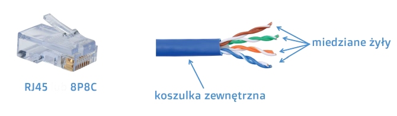
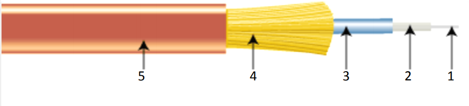
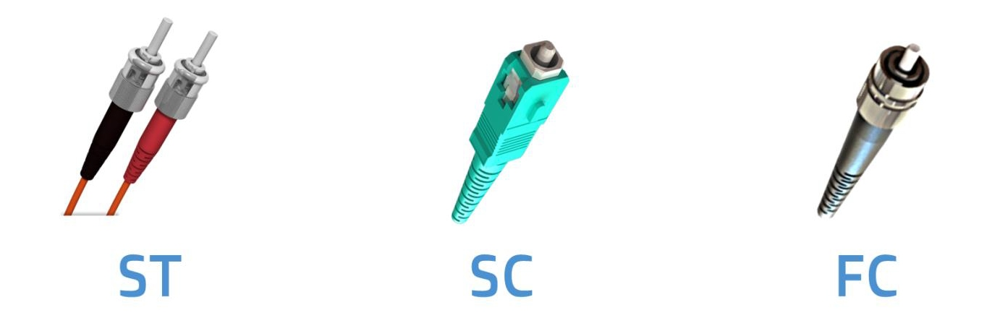
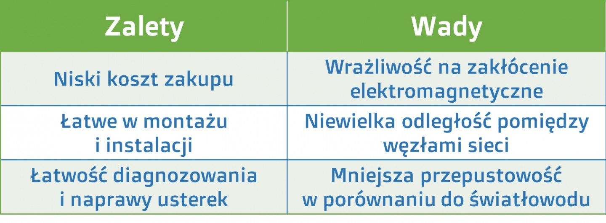
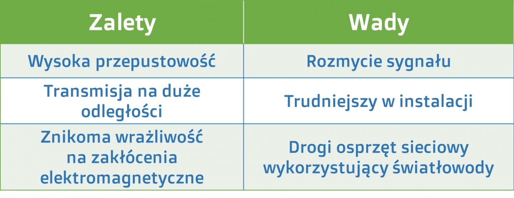

Media transmisyjne
Niezwykle ważnym zagadnieniem zawiązanym z sieciami komputerowymi są media transmisyjne.
Ważnym z wielu powodów, a najważniejszym z nich jest fakt, że dobór odpowiedniego medium
stanowi podstawę i gwarancję właściwego oraz wydajnego działania sieci komputerowych.
PODSTAWOWE POJĘCIA
- Przesłuch - Szum elektryczny w kablu pochodzący z sygnałów z innych przewodów. Jeżeli dwa przewody znajdują się blisko siebie, i nie są skręcone, energia z jednego może się przenieść na sąsiedni przewód.
- EMI - (electromagnetic interference) zakłócenia elektromagnetyczne
- RFI (radio frequency interference) zakłócenia wywołane falami radiowymi Każdy przewód w kablu może absorbować elektryczne sygnały z innych przewodów oraz źródeł elektrycznych. Jeżeli wynikowy szum elektryczny osiągnie wystarczająco wysoki poziom sygnał ulegnie zniekształceniu.
KABEL KONCENTRYCZNY
- zakończony jest złączem zwanym BNC. Czasami spotkamy też na zakończeniu
kabla koncentrycznego, tak zwany terminator BNC, którego zadaniem jest
eliminowanie odbicia sygnału przesyłanego przez kabel.
1. Budowa:

- Przewód wewnętrzny
- izolacja dielektryczna
- przewód zewnętrzny (miedziany ekran)
- zewnętrzna powłoka ochronna (często plastikowa, lub gumowa)
Zakończony jest złączem zwanym BNC. Czasami spotkamy też na zakończeniu kabla koncentrycznego,
tak zwany terminator BNC, którego zadaniem jest eliminowanie odbicia sygnału przesyłanego przez kabel.
KABEL TYPU SKRĘTKA
- W zależności od rodzaju skrętki występują jeszcze folie i ekrany ochronne zabezpieczające kabel przed działaniem
niepożądanych czynników mogących mieć wpływ na transmisje
danych, np. fal elektromagnetycznych.
1. Budowa:

Składa się z koszulki zewnętrznej oraz miedzianych żyłek pokrytych izolacją.
Zakończony jest wtyczką RJ45, zwaną inaczej jako 8P8C.
2. Typy skrętki:

- UTP - skrętka nieekranowana
- FTP - skrętka ekranowana folią
- STP - skrętka ekranowana siatką
Cechy UTP
- Ma 4 pary skręconych ze sobą przewodów
- Każdy przewód jest pokryty materiałem izolującym
- Skręcenie przewodów powoduje zmniejszenie zakłoceń RFI i EMI
- Liczba skręceń poszczególnych par jest różna - zmniejszenie przesłuchu między przewodami
- Zalety
- Łatwość instalacji
- Cena
- Średnica kabla
- Podatność na zakłócenia
- Mniejsza odległość między wzmacniaczami sygnału niż w przypadku kabli koncentrycznych i światłowodowych
Wady
Cechy STP
-
Łączy techniki
- Ekranowania
- Znoszenia
- Skręcania przewodów
-
Zalety
- Redukuje przesłuch i sprzęganie pomiędzy parami żył
- Chroni przed zakłóceniami zewnętrznymi Wady
- Wymaga uziemienia na obu końcach kabla Jeśli będzie ono niewłaściwie wykonane kabel stanie się bardzo podatny na wszelkie zakłócenia z zewnątrz
- Większe rozmiary, waga, koszt kabla
- Trudniejszy w montażu
Cechy FTP
To kabel bardzo podobny do UTP, ale z dodatkową folią pod płaszczem kabla.
Folia ta zmniejsza zapychanie się pasma kabla
KABEL ŚWIATŁOWODOWY
- zupełnie innym od omówionych wcześniej mediów transmisyjnych jest kabel światłowodowy,
innym ze względu na materiał wykorzystywany do budowy rdzenia. W przypadku kabla koncentrycznego
i skrętki rdzeń czy też żyły są miedziane, natomiast w przypadku kabli światłowodowych mamy do
czynienia z włóknem szklanym. Wykorzystanie włókna szklanego jako budulca rdzenia wymusza
również zastosowanie innego rodzaju sygnału przesyłowego. W przypadku mediów miedzianych był
to prąd elektryczny, a w przypadku światłowodów jest to promień świetlny, a najczęściej wykorzystywany
rodzaj to światło podczerwone.
1. Budowa:

- rdzeń
- Główny element światłowodu.
- W nim rozchodzi się sygnał świetlny.
- płaszcz
- Jest wykonany z tlenków krzemu
- Ma mniejszy współczynnik załamania światła niż rdzeń
- Promienie ulegają całkowitemu odbiciu wewnętrznemu na granicy rdzenia i płaszcza
- separator
- Zazwyczaj plastikowy
- Chroni rdzeń i płaszcz przed uszkodzeniem
- przędza poliamidowa
- Zapobiega rozciąganiu światłowodu podczas instalacji
- Może wydzielać korodujące lub niebezpieczne dla zdrowia opary, gdy jest trzymana na dworze.
- koszulka
- Chroni przed wytarciem
Można się też spotkać z innymi złączami. Przykładowo:

Złącze ST
Prosta szybka końcówka złącza ST charakteryzuje się szybkim elementem zamykającym (blokującym)
typu bagnetowego oraz sprężynką utrzymującą włókno. Najczęściej stosowany w aplikacjach
sieciowych takich jak sieci LAN, sieciowe przetwarzanie danych i innych.
Poziomo montowane adaptery simplex lub duplex dostępne są w obudowach
plastikowych lib metalowych.
- Właściwości:
- Obudowa stylu bagnetowego - szybkie łączenie i rozłączanie
- Niskie poziomy strat świetlnych
- Dobra wymienność
- Wysoka jakość i wydajność
- Wysoka stabilność temperaturowa
Złącze SC
Złącza światłowodowe SC są w pełni kompatybilne ze standardem NTT-FC.
Mechanizm push-pull zapewnia proste i niezawodne połączenie przy efektywnym wykorzystaniu miejsca.
- Właściwości:
- Typowa złączka łączy jedno lub dwa włókna światłowodowe.
- Możliwość wielokrotnego łączenia i rozłączania światłowodów za pomocą gniazd i wtyków
- Ten typ złącza jest szeroko stosowany zarówno do światłowodów jednomodowych, jak i wielomodowych
- Do połączenia ze złączem SC stosuje się patchcordy światłowodowe
które są przeznaczone do przełączania pomiędzy portami aktywnego sprzętu.
Złącze FC
Typ FC/PC (Physical Contact) z kopułowym zakończeniem włókien
światłowodowych redukuje straty świetlne na płaskim zakończeniu ferruli.
- Właściwości:
- Dostępne są dla obu rodzajów włókien optycznych: jednomodowe i wielomodowe
- Niskie poziomy strat świetlnych
- Dobra wymienność
- Wysoka jakość
- Wysoka stabilność temperatury
2. Rodzaje światłowodów:
Światłowody również mają kilka rodzajów, tak jak kable miedziane.
Rodzaje owe różnią się sposobem przesyłania wiązek światła oraz zastosowana średnica
rdzenia. W przypadku jednomodowego światłowodu wynosi ona między 8 a 10 mikrometrów
[μm], natomiast w przypadku światłowodu wielomodowego 50 lub 62,5 mikrometra.
Dwa podstawowe rodzaje to:
- Jednomodowy - przez szklany rdzeń przesyłana jest tylko jedna wiązka światła, co ogranicza rozmycie sygnału, czyli jego osłabienia
- Wielomodowy - przez szklany rdzeń przesyłane jest wiele wiązek światła, przez co jest większy stopien rozmycia sygnału
Zjawisko dyspersji modowej zostało wyeliminowane w włóknach jednomodowych, w których rdzeniu
transmitowany jest tylko jeden mod światła o określonej długości fali. Tak jak jest to widoczne
na ilustracjach. W przypadku światłowodu jednomodowego fala świetlna
rozchodzi się praktycznie równolegle do osi światłowodu.
Zatem główną różnicą między światłowodem jednomodowym i wielomodowym jest sposób transmisji
światła w rdzeniu światłowodowym. W włóknie wielomodowym transmitowanych jest wiele
modów (wiązek światła) o tej samej długości fali.
Media bezprzewodowe:
Fale radiowe są najczęstrzym medium bezprzewodowym.
Fale radiowe są promieniowaniem elektromagnetycznym z zakresu częstotliwości od 3 Hz do
około 3 THz. Źródła fal radiowych mogą być zarówno naturalne, jak i sztuczne, np. emitowane
przez stacje nadawcze telefonii komórkowej. Ich głównym celem jest przenoszenie
informacji, a w przypadku telekomunikacji transmisja danych. Wyróżnia się kilka rodzajów fal
radiowych, natomiast do transmisji danych stosuje się fale długie, średnie i krótkie oraz ultrakrótkie.
- Zalety sieci bezprzewodowej (przykładowo Wi-Fi):
- sieć pozbawiona kabli z której możesz korzystać zarówno w domu jak i w biurze,
- darmowy dostęp do Internetu dzięki Hot Spotom, dostępnym w większych miastach,
- zyskujesz swobodę oraz mobilność działania, możesz korzystać z różnych urządzeń: notebook, smartfon, laptop,
- urządzenia Wi-Fi są łatwo dostępne oraz stosunkowo niedrogie,
- w porównaniu z siecią LAN zyskujesz dużą odporność na wyładowania atmosferyczne, szybkość instalacji,
- możliwość połączenia z internetem nawet w ruchu, poza miejscem zamieszkania,
- idealne rozwiązanie w budynkach zabytkowych, w przypadku których nie można używać okablowania,
- możliwość rozbudowy,
- szybkość działania,
- poprawa efektywności pracy.
- Wady sieci bezprzewodowej (przykładowo Wi-Fi):
- popularne standardy wykorzystywane w przypadku Wi-Fi to 802.11b, 802.11g oraz 802.11n, wykorzystują
one z kolei pasmo 2,4 GHz. Na takiej samej częstotliwości pracują urządzenia takie jak:
kuchenki mikrofalowe, telefon, telewizja radiowe itp. Praca niektórych tych urządzeń może zagłuszać
sygnały Wi-fi i ograniczać jego zasięgi, - niewielki zasięg – zazwyczaj dostępne w odległościach do 90 – 150 metrów na zewnątrz
- prędkość transmisji danych jest stosunkowo niska w porównaniu do sieci kablowej
- mniejsze bezpieczeństwo transmisji w porównaniu do sieci kablowej, konieczne jest zastosowanie kilku dodatkowych zabezpieczeń, które również mogą spowodować spadek prędkości przesyłania
- w przypadku pracy kilku urządzeń na jednym kanale, przesył danych może być zakłócany
- wymagana jest rezerwacja odpowiedniego pasma
- szybkość transmisji danych w dużej mierze zależna jest od odległości pomiędzy urządzeniami, które się komunikują
- duża podatność na wszelkiego rodzaju zakłócenia
PODSUMOWANIE
Media miedziane:

Media światłowodowe:
